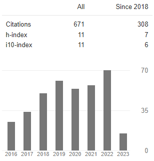

|
 |
Journals indexed by SCI / SCI-E
11. Gökhan Şengül, Murat Karakaya, Sanjay Misra, Oluvsola O. Abayomi-Alli, Robertas Damaševičiusa, Deep learning based fall detection using smartwatches for healthcare applications, Biomedical Signal Processing and Control. Vol. 71, Part B, (2022), DOI: https://doi.org/10.1016/j.bspc.2021.103242.[PDF] [DOI] ISSN: 1746-8094
10. Tolga Üstünkök, Murat Karakaya, SS-MLA: a semisupervised method for multi-label annotation of remotely sensed images, J. Appl. Remote Sens. 15(3), 036509 (2021), DOI: 10.1117/1.JRS.15.036509.[PDF] [DOI] ISSN: 1931-3195
9. Murat Karakaya, Meltem Eryilmaz, Ulaş Ozan Ceyhan, Analyzing students' Academic Success in Pre-requisite Course Chains: A Case Study in Turkey, International Journal of Engineering Education, Vol. 34, Issue 2 (A), pp 364–370, April 2018. [PDF] [DOI] ISSN: 0949-149X
8. Halil Savuran, Murat Karakaya, Efficient Route Planning for an Unmanned Air Vehicle Deployed on a Moving Carrier, Soft Computing, Vol. 20, Issue 7, pp 2905-2920, July 2016. [PDF] [DOI] ISSN: 1432-7643
5. Murat Karakaya, Deadline-Aware Energy-Efficient Query Scheduling in Wireless Sensor Networks with Mobile Sink, The Scientific World Journal, vol. 2013, Article ID 834653, 2013. [PDF] [DOI]
3. Murat Karakaya, Ibrahim Korpeoglu, Ozgur Ulusoy,Counteracting Free Riding in Peer-To-Peer Networks Computer Networks, Vol. 52, No. 3, pp 675-694, Elsevier, 2008. [DOI]
1. D. Katsaros, A. Nanopoulos, M. Karakaya, G. Yavas, O. Ulusoy, Y. Manolopoulos, Clustering Mobile Trajectories for Resource Allocation in Mobile Environments,Intelligent Data Analysis Conference (IDA'2003),Advances in Intelligent Data Analysis V, Lecture Notes in Computer Science (Springer Verlag), vol.2810, 2003. [PDF] [DOI]

Journals indexed by other sources
27. Murat Karakaya, Başarılı Bir Türkçe Büyük Dil Modelini Sıfırdan Eğitmek: Ne Kadar Metin Verisine İhtiyacımız Var?, Türkiye Bilişim Derneği Bilişim Dergisi, Vol. 199, 50-51, ISSN 1303-6300, Nisan, 2025. [PDF].26. Erhan Gokcay, Murat Karakaya Karakaya, Gokhan Sengul, Optimal Number of Clusters, International journal of scientific research in information systems and engineering (IJSRISE), Vol. 4, No. 1, 81-86, ISSN 2380-8128, June 2018. [PDF].
25. Atila Bostan, Murat Karakaya, Gökhan Sengul, Chaos-Based Data Encryption Using Arnold’s Cat Map, International journal of scientific research in information systems and engineering (IJSRISE), Vol. 4, No. 1, 25-30, ISSN 2380-8128, June 2018. [PDF].
24. Meltem Eryilmaz, Murat Karakaya, Harmanlanmış Öğrenme Ortamlarında Sosyal Medya Kullanımının Öğrenci Doyumu Üzerine Etkisi (The Impact of Using Social Media in Blended Learning Environments on Student Satisfaction), Yüzüncü Yıl Üniversitesi Eğitim Fakültesi Dergisi, Vol. 15, No. 1, 106-129, ISSN:1305-020, Ocak 2018. [PDF]. [DOI]
22. Gokhan Sengul, Murat Karakaya, Atila Bostan, A Smart Classroom Application: Monitoring And Reporting Attendance Automatically Using Smart Devices, International Journal of Scientific Research in Information Systems and Engineering (IJSRISE), Vol. 3, No. 1, 39-43, ISSN: 2380-8128, Apr. 2017. [PDF].
21. Atila Bostan, Gokhan Şengül, Murat Karakaya, Unidirectional Data Transfer: A Secure System To Push The Data From A High Security Network To A Lower One Over An Actual Air-Gap, International Journal of Scientific Research in Information Systems and Engineering (IJSRISE), Vol. 3, No. 1, 35-38, ISSN: 2380-8128, Apr. 2017. [PDF].
20. Gokhan Sengul, Murat Karakaya, Atila Bostan, Determination and Identification Of Dangerously Lane Changing Vehicles In Traffic By Image Processing Techniques, International Journal of Scientific Research in Information Systems and Engineering (IJSRISE), Vol. 3, No. 1, 44-47, ISSN: 2380-8128, Apr. 2017. [PDF].
19. Gokhan Sengul, Murat Karakaya, Atila Bostan, Remotely Monitoring Activities of The Elders Using Smart Watches, International Journal of Scientific Research in Information Systems and Engineering (IJSRISE), Vol. 3, No. 1, 56-60, ISSN: 2380-8128, Apr. 2017. [PDF].
18. Murat Karakaya, Ender Sevinç, An Efficient Genetic Algorithm for Routing Multiple UAVs under Flight Range and Service Time Window Constraints, International Journal of Informatics Technologies, Vol. 10, No.1, 113-121, DOI: http://dx.doi.org/10.17671/btd.15848, ISSN: 2147-0715, Jan. 2017. [PDF].
17. Murat Karakaya, Gökhan Şengül, Using Bluetooth Low Energy Beacons for Indoor Localization, International Journal of Intelligent Systems and Applications in Engineering, Vol. 5, No. 2, 39-43, DOI: http://dx.doi.org/10.18201/ijisae.2017528726, ISSN: 2147-6799, April 2017. [PDF].
16. Hazan Daglayan, Murat Karakaya, An Optimized Ambulance Dispatching Solution for Rescuing Injures After Disaster, Universal Journal of Engineering Science, Vol. 4, No. 3, 50-57, DOI: http://dx.doi.org/10.13189/ujes.2016.040303, ISSN: 2331-6624, Sep. 2016. [PDF].
15. Murat Karakaya, Gokhan Şengül, Atila Bostan, A Wireless Control System Based on Smart Bluetooth and Ibeacon Technology for Auditing the Patrols, International Journal of Scientific Research in Information Systems and Engineering (IJSRISE), Vol. 2, No. 3, 8-11, ISSN: 2380-8128, Dec. 2016. [PDF].
14. Murat Karakaya, Atila Bostan, Erhan Gökçay, How Secure is Your Smart Watch?, International Journal of Information Security Science, Vol. 5, No. 4, 90-95, ISSN: 2147-0030, Dec. 2016. [PDF].
13. Hazan Daglayan, Murat Karakaya, The Impact of Crossover and Mutation Operators on a GA Solution for the Capacitated Vehicle Routing Problem, Universal Journal of Engineering Science, Vol. 4, No. 3, 39-44, DOI: http://dx.doi.org/10.13189/ujes.2016.040301, ISSN: 2331-6624, Sep. 2016. [PDF].
12. Atila Bostan, Murat Karakaya, Öğrenci Ders Devamımın Sınavlarda Alınan Notlara Etkisi Üzerine Bir Durum Çalışması (A Case Study on Impact of Student Course-Attendance on Exam Grades), Mersin Üniversitesi Eğitim Fakültesi Dergisi, Vol. 12, No. 1, 211-222, DOI: http://dx.doi.org/10.17860/efd.87593, e-ISSN: 1306-7850, Nisan 2016. [PDF].
11. Murat Karakaya, Mobile Sink Scheduling Method for Wireless Sensor Networks under Travel Time Uncertainty, Journal of Advances in Computer Networks, Vol. 3, No. 4, 326-329, ISSN: 1793-8244, Dec. 2015. [PDF].
10. Murat Karakaya, RSRP: Risk Sensitive Routing Protocol in Wireless Sensor Networks, Girne American University Journal of Social and Applied Sciences, Vol. 7, No. 11, 68-75, ISSN: 1305-9130, Sep. 2015. [PDF].
9. Murat Karakaya, Gokhan Sengul, Using Service Oriented Architecture for Plate Recognition by Mobile Devices, Girne American University Journal of Social and Applied Sciences, Vol. 7, No. 11, 76-81, ISSN: 1305-9130, Sep. 2015. [PDF].
8. Murat Karakaya, Gokhan Sengul, Determining Firm Logos Using Image Processing Techniques on a Mobile Device to Aid Blind People, Girne American University Journal of Social and Applied Sciences, Vol. 7, No. 11, 83-88, ISSN: 1305-9130, Sep. 2015. [PDF].
7. Ibrahim Cereci1, Hazan Daglayan, Nergiz Kılınc, Senem Aktaş, Murat Karakaya, Efficient Data Gathering in WSN with a Range Constrained Mobile Relay, Girne American University Journal of Social and Applied Sciences, Vol. 7, No. 11, 89-95, ISSN: 1305-9130, Sep. 2015. [PDF].
6. Halil Savuran, Murat Karakaya, Route Optimization Methods for Unmanned Air Vehicle Launched from a Carrier, Lecture Notes on Software Engineering, Vol. 3, No. 4, 279-284, ISSN: 2301-3559, Nov. 2015. [PDF].
5. Ender Sevinc, Murat Karakaya, Maximizing UAV Target Coverage under Flight Range and Target Service Time Constraints, Lecture Notes on Software Engineering, Vol. 3, No. 4, 290-294, ISSN: 2301-3559, Nov. 2015. [PDF].
4. Murat Karakaya, A Local Optimization Technique for Assigning New Targets to the Planned Routes of Unmanned Aerial Vehicles, The Balkan Journal of Electrical & Computer Engineering (BAJECE) , Vol.2, No.2, 63-65, ISSN : 2147-284X, June 2014. [PDF].
3. Murat Karakaya, UAV Route Planning For Maximum Target Coverage, Computer Science & Engineering: An International Journal (CSEIJ), Vol. 4, No. 1, 27-34, ISSN: 2231 - 329X, February 2014. [PDF]
2. Murat Karakaya, Ibrahim Korpeoglu, Ozgur Ulusoy, A General Purpose Simulator for Unstructured P2P Networks and a Sample Application, Kara Harp Okulu Savunma Bilimleri Dergisi (The Journal of Defense Sciences), Vol.8, No.2, 67-86, ISSN: 1303-6831, November 2009. [PDF]
1. Murat Karakaya and H. Altay Guvenir, ARG: A Tool for Automatic Report Generation,, Istanbul University - Journal of Electrical & Electronics Engineering, Vol. 4, No. 2, pp. 1101-1109, 2004. [PDF]
International Conferences
47. Yavuz Selim Sever, Başak Nehir Artan, Berna Danışman, Nuran Er, Murat Karakaya, FinSentio: A Modular LLM-Powered Financial Assistant for Investment Guidance, Risk Analysis, and Education, 2025 10th International Conference on Computer Science and Engineering (UBMK), İstanbul, Türkiye, 17-18-19 Sept. 2025 [PDF] [PROCEEDING] [DOI]
46. Merve Bozdağ, Selin Göç, Elif Sude Memiş, Miray Aday, Murat Karakaya, EntreLocate: An AI Assistant for Business Location and Risk Assessment, 2025 10th International Conference on Computer Science and Engineering (UBMK), İstanbul, Türkiye, 17-18-19 Sept. 2025 [PDF] [PROCEEDING] [DOI]
45. Harun Hüdai Tan, Baran Erol, Hüseyin Yiğit Erten, Ahmet Arda Bağdatlı, Murat Karakaya, AI-Based Domestic Relocation Assistant for Türkiye, 2025 10th International Conference on Computer Science and Engineering (UBMK), İstanbul, Türkiye, 17-18-19 Sept. 2025 [PDF] [PROCEEDING] [DOI]
44. İlknur Gür Nalçacı, Ferhat Şeker, Murat Karakaya, Fine-Tuning Open-Source LLMs For Turkish Question Answering: The Impact of Data Set Size and Parameter Selection in the Nutuk Example, 2025 10th International Conference on Computer Science and Engineering (UBMK), İstanbul, Türkiye, 17-18-19 Sept. 2025 [PDF] [PROCEEDING] [DOI]
43. Murat Karakaya, Local Benchmarking of Sentence Embedding Models for Retrieval-Augmented Generation, International conference on Computer Science and Intelligence Systems (ICCSIS - 2025), Madrid,Spain, 10th-11th Aug 2025 [PDF] [PROCEEDING] [DOI]
42. Cansen Çağlayan, Murat Karakaya, Multi-Topic Controllable Text Generation with Keywords, 2023 the 5th International Conference on Research in Engineering, Technology and Science (ICRETS), Budapest, Hungary, July 06 - 09, 2023. [PDF] [DOI]
41. Murat Karakaya, Derin Öğrenme ile Otomatik Olarak Üretilen Resim Alt Yazısındaki Hataların Tespiti (Detecting Errors in Automatic Image Captioning by Deep Learning), 2021 6st International Informatics and Software Engineering Conference (UBYMK) , Ankara,Turkey, 46-49, Sept, 2021. [PDF] [DOI]
40. Cansen Çağlayan, Murat Karakaya, Topic-Controlled Text Generation, 2021 6st International Informatics and Software Engineering Conference (UBYMK) , Ankara,Turkey, 533-536, 15-17 Sept, 2021. [PDF] [DOI]
39. Tolga Üstünkök, Murat Karakaya, Effect of PSO Tuned P, PD, and PID Controllers on the Stability of a Quadrotor, 2019 4st International Informatics and Software Engineering Conference (UBYMK) , Ankara,Turkey, 139-144, November, 2019. [PDF] [DOI]
38. Tolga Üstünkök, Ozan Acar, Murat Karakaya, Image Tag Refinement with Self Organizing Maps, 2019 4st International Informatics and Software Engineering Conference (UBYMK) , Ankara,Turkey, 348-353, November, 2019. [PDF] [DOI]
37. G. Tirkes, C. C. Aydin, G. Sengul, A. Bostan, M. Karakaya, An Undergraduate Curriculum for Deep Learning, International Conference on Computer Science and Engineering (UBMK’18), Sarajevo, Bosnia Herzegovina, 604-609, 20th -23th September, 2018. [PDF] [DOI] 10.1109/UBMK.2018.8566575
36. A. Bostan, G. Sengul, G. Tirkes, C. C. Aydin, M. Karakaya, Deep Learning and Current Trends in Machine Learning, International Conference on Computer Science and Engineering (UBMK’18), Sarajevo, Bosnia Herzegovina, 543-546, 20th -23th September, 2018. [PDF] [DOI] 10.1109/UBMK.2018.8566365
35. Murat Karakaya, Recent Developments in Computer Vision for Finding Available Parking Lots, 322nd International Conference on Communication and Signal Processing (ICCSP), Phuket, Thailand , 9th -10th February, 2018. [Full Paper PDF].
34. Erhan Gökçay, Murat Karakaya, Gokhan Şengül, Optimal Number of Clusters, The Fifth International Symposium on Engineering, Artificial Intelligence and Applications (ISEAIA 2017), Girne American University, Girne, North Cyprus, 1-3 Nov. 2017. [Abstract PDF].
33. Atila Bostan, Murat Karakaya, Gokhan Şengül, Chaos-Based Data Encryption Using Arnold’s CAT Map, The Fifth International Symposium on Engineering, Artificial Intelligence and Applications (ISEAIA 2017), Girne American University, Girne, North Cyprus, 1-3 Nov. 2017. [Abstract PDF].
32. Murat Karakaya, Meltem Eryilmaz, Atila Bostan, Predicting Student Success according to Online Activities in a Blended Course using Artificial Neural Networks, The Fifth International Symposium on Engineering, Artificial Intelligence and Applications (ISEAIA 2017), Girne American University, Girne, North Cyprus, 1-3 Nov. 2017. [Abstract PDF].
31. Murat Karakaya, Atila Bostan, Gokhan Şengül,, Extending Lifetime of the Selected Sensor Nodes in Wireless Sensor Networks, The Fifth International Symposium on Engineering, Artificial Intelligence and Applications (ISEAIA 2017), Girne American University, Girne, North Cyprus, 1-3 Nov. 2017. [Abstract PDF].
30. Atila Bostan, Murat Karakaya, Gokhan Şengül, Biometric Verification on e-ID-Card Secure Access Devices: A Case Study on Turkish National e-ID Card Secure Access Device Specifications, 10th International Conference on Information Security and Cryptology (ISCTURKEY 2017), Ankara, Turkey, Oct 20 - 21, 2017. [Full Paper PDF].
29. Murat Paşa Uysal, Murat Karakaya, Ontology-Supported Enterprise Architecture Analysis, 2017 IEEE First Ukraine Conference on Electrical and Computer Engineering (UKRCON), Kyiv, Ukraine, May 29 – June 2, 2017. [Full Paper PDF].
28. Murat Karakaya, Gokhan Şengül, Erhan Gökçay, An IoT Application for Locating Victims Aftermath of an Earthquake, 2017 IEEE First Ukraine Conference on Electrical and Computer Engineering (UKRCON), Kyiv, Ukraine, May 29 – June 2, 2017. [Full Paper PDF].
27. Gokhan Şengül, Atila Bostan, Murat Karakaya, A Smart Classroom Application: Monitoring and Reporting Attandency Automatically Using Smart Devices, The Fourth International Symposium on Engineering, Artificial Intelligence and Applications (ISEAIA 2016), Girne American University, North Cyprus, 2-4 Nov. 2016. [Abstract PDF].
26. Gokhan Şengül, Atila Bostan, Murat Karakaya, Determination and Identification of Dangerously Lane Switching Vehicles in Traffic by Image Processing Techniques, The Fourth International Symposium on Engineering, Artificial Intelligence and Applications (ISEAIA 2016), Girne American University, North Cyprus, 2-4 Nov. 2016. [Abstract PDF].
25. Atila Bostan, Gokhan Şengül, Murat Karakaya, Unidirectional Data Tranfer : A Secure System to Push the Data From A High Security Network to A Lower One Over An Actual Air-Gap, The Fourth International Symposium on Engineering, Artificial Intelligence and Applications (ISEAIA 2016), Girne American University, North Cyprus, 2-4 Nov. 2016. [Abstract PDF].
24. Murat Karakaya, Gokhan Şengül, Atila Bostan A Wireless Control System Based on Smart Bluetooth and Ibeacon Technology for Auditing the Patrols, The Fourth International Symposium on Engineering, Artificial Intelligence and Applications (ISEAIA 2016), Girne American University, North Cyprus, 2-4 Nov. 2016. [Abstract PDF].
23. Murat Karakaya, Gokhan Şengül, Atila Bostan, Remotely Monitoring Activities of the Elders Using Smart Watches, The Fourth International Symposium on Engineering, Artificial Intelligence and Applications (ISEAIA 2016), Girne American University, North Cyprus, 2-4 Nov. 2016. [Abstract PDF].
22. Atila Bostan, Murat Karakaya, Erhan Gökçay, Encouraging User-Trust to Internet-of-Things Implementations, 9th International Conference on Information Security and Cryptology (ISCTURKEY 2016),Ankara, Turkey, Oct 25 to 26, 2016 . [Full Paper PDF].
21. Murat Karakaya, Atila Bostan, Erhan Gökçay, How Secure is Your Smart Watch?, 9th International Conference on Information Security and Cryptology (ISCTURKEY 2016),Ankara, Turkey, Oct 25 to 26, 2016 . [Full Paper PDF].
20. Atila Bostan, Murat Karakaya, Erhan Gökçay, Meeting the Requirements of MüDEK Program Outcomes Item 5 in Computer Engineering Programs, International Conference on Computer Science and Engineering (UBMK 2016), Tekirdağ, Turkey, Oct 20 to 23, 2016 . [Full Paper PDF].
19. Erhan Gökçay, Murat Karakaya, Atila Bostan, A new Skeletonization Algorithm for Data Processing in Cloud Computing, International Conference on Computer Science and Engineering (UBMK 2016), Tekirdağ, Turkey, Oct 20 to 23, 2016 . [Full Paper PDF].
18. Erhan Gökçay, Murat Karakaya, Atila Bostan, An Information Theoretic Approach To Edge Detection, International Conference on Computer Science and Engineering (UBMK 2016), Tekirdağ, Turkey, Oct 20 to 23, 2016 . [Full Paper PDF].
17. Murat Karakaya, Atila Bostan, Erhan Gökçay, Prediction of Student Success Considering Attendancy and Midterm Grades, International Conference on Computer Science and Engineering (UBMK 2016), Tekirdağ, Turkey, Oct 20 to 23, 2016 . [Full Paper PDF].
16. Murat Karakaya, Ender Sevinc, Planning Multiple UAVs to Visit Points of Interest Considering Flight Range and Service Time Constraints, The 2nd International Conference on Engineering and Natural Sciences (ICENS 2016), Sarajevo, Bosnia and Herzegovina, May 24 to 28, 2016 . [Full Paper PDF].
15. Ulaş Ozan Ceyhan, Murat Karakaya, Investigating Students Success On Prerequisite Chain Courses, The 2nd International Conference on Engineering and Natural Sciences (ICENS 2016), Sarajevo, Bosnia and Herzegovina, May 24 to 28, 2016 . [Abstract PDF].
14. Murat Karakaya, Mobile Sink Scheduling Method for Wireless Sensor Networks under Travel Time Uncertainty, The 2nd International Conference on Network Technologies (ICNT 2015), Dubai, UAE, October 17-18, 2015. [Abstract PDF].
13. Senem Aktas, Nergiz Kilinc, Hazan Daglayan, Ibrahim Cereci, Murat Karakaya, UAV Route Planing for Avoidıng Enemy Radars, The 1st International Conference on Engineering and Natural Sciences (ICENS 2015), p. 161, Skopje, Macedonia, 15-19 May 2015. [Abstract PDF].
12. Nergiz Kilinc, Ibrahim Cereci, Hazan Daglayan, Senem Aktas, Murat Karakaya, A Genetic Algorithm for Safe and Rapid Transmission of Military Vehicles in a Minefield, The 1st International Conference on Engineering and Natural Sciences (ICENS 2015), p. 139, Skopje, Macedonia, 15-19 May 2015. [Abstract PDF].
11. Hazan Daglayan, Nergiz Kilinc, Senem Aktas, Ibrahim Cereci, Murat Karakaya, Efficient Routing of Ambulances Aftermath of a Disaster, The 1st International Conference on Engineering and Natural Sciences (ICENS 2015), Skopje, Macedonia, p.145, 15-19 May 2015. [Abstract PDF].
10. Gokhan Şengül, Murat Karakaya, A Service Oriented Architecture to Recognize Car Plates by Mobile Devices, The Second International Symposium on Engineering, Artificial Intelligence and Applications (ISEAIA 2014), Girne American University, North Cyprus, 5-7 Nov. 2014. [Abstract PDF].
9. Murat Karakaya, Gokhan Şengül, Determining firm logos using image processing techniques on a mobile device to aid blind people, The Second International Symposium on Engineering, Artificial Intelligence and Applications (ISEAIA 2014), Girne American University, North Cyprus, 5-7 Nov. 2014. [Abstract PDF].
8. Murat Karakaya, RSRP: Risk Sensitive Routing Protocol in Wireless Sensor Networks, The Second International Symposium on Engineering, Artificial Intelligence and Applications (ISEAIA 2014), Girne American University, North Cyprus, 5-7 Nov. 2014. [Abstract PDF].
7. Ibrahim Cereci1, Hazan Daglayan, Nergiz Kılınc, Senem Aktaş, Murat Karakaya, Efficient Data Gathering in WSN with a Range Constrained Mobile Relay, The Second International Symposium on Engineering, Artificial Intelligence and Applications (ISEAIA 2014) , Girne American University, North Cyprus, 5-7 Nov. 2014. [Abstract PDF].
6. Halil Savuran, Murat Karakaya, Route Optimization Methods for Unmanned Air Vehicle Launched from a Carrier, 4th International Conference on Computer and Software Modeling (ICCSM 2014) , Bangkok, Thailand,10-12 Oct. 2014. [Abstract PDF].
5. Ender Sevinc, Murat Karakaya, Maximizing UAV Target Coverage under Flight Range and Target Service Time Constraints, 4th International Conference on Computer and Software Modeling (ICCSM 2014) , Bangkok, Thailand, 10-12 Oct. 2014. [Abstract PDF].
4. Murat Karakaya, A Local Optimization Technique for Assigning New Targets to the Planned Routes of Unmanned Aerial Vehicles, The First International Symposium on Engineering, Artificial Intelligence and Applications (ISEAIA 2013) , Girne American University, North Cyprus, 2013. [Abstract PDF].
3. Murat Karakaya, UAV Route Planning For Maximum Target Coverage, The First International Symposium on Engineering, Artificial Intelligence and Applications (ISEAIA 2013) , Girne American University, North Cyprus, 2013. [Abstract PDF]
2. Murat Karakaya, Ibrahim Korpeoglu, Ozgur Ulusoy, A Distributed and Measurement-Based Framework Against Free Riding in Peer-to-Peer Networks, The Fourth IEEE International Conference on Peer-to-Peer Computing, 25-27 August 2004, Zurich, Switzerland. [Full Paper PDF copy of the extended version]. [DOI]1. Murat Karakaya, Ozgur Ulusoy, Evaluation of a Broadcast Scheduling Algorithm, Fifth East-European Conference on Advances in Databases and Information Systems September 25-28, 2001, Vilnius, Lithuania (ADBIS'01), Lecture Notes in Computer Science (Springer Verlag), vol.2151, pp. 182-195, 25-28 September 2001. [Full Paper PDF] [DOI]
National Conferences
11. Cansu Çiğdem Ekin, Güzin Türkmen, Murat Karakaya, ChatGPT: Impact of Controllable Text Generation On Software Engineering Education, 16. Ulusal Yazılım Mühendisliği;i Sempozyumu (UYMS'22), p. 10 - 22, 27 �žubat-01 Mart 2023. [PDF] [PPT] [Proceeding]10. Fatih Can Akıncı, Murat Karakaya, Araç Park Yerlerinin Doluluk Durumlarının Derin Öğrenme Yöntemi ile Tespit Edilmesi (Parking Space Occupancy Detection Using DeepLearning Methods) , 26th Signal Processing and Communications Applications Conference (SIU), 2-5 Mayıs 2018. [PDF]. [DOI]
9. Fatih Can Akıncı, Murat Karakaya, Şehirlerin Dijital Dönüşümü: Görüntü İşleme Yöntemlerinin Boş Park Yerlerinin Tespitinde Kullanılması, TBD 34. Ulusal Bilişim Kurultayı (BİLİŞİM 2017), p. 69-72, 20-21 Aralık 2017. [PDF].
8. Murat Karakaya, Çiğdem Turhan, Ali Yazıcı, Yazılım Mühendisliği Eğitiminde Ders Öğrenme Çıktılarının Çözümlenmesi Üzerine Bir Durum Çalışması (A Case Study on Measuring Course Learning Outcomes in Software Engineering Education), 11. Ulusal Yazılım Muhendisliği Sempozyumu (UYMS'17), p. 312 - 320, 18-20 Ekim 2017. [PDF].
7. Murat Karakaya, Ali Yazıcı, Yazılım Mühendisliği Alanında Yayımlanan Tez ve Makalelerin SWEBOK a göre Değerlendirilmesi ve Yazılım Mühendisliği Eğitimi ve Projelerinin İyileştirilmesi için Öneriler, 10. Ulusal Yazılım Muhendisliği Sempozyumu (UYMS'16), 24-26 Ekim 2016. [PDF].
6. Murat Karakaya, Atila Bostan, Yazılım Mühendisliği;i Eğiitiminde Bitirme Projesinin Yürütülmesinde İki Farklı Yüntemin Öğrenci Bakış Açısıyla Değerlendirilmesi, 9. Ulusal Yazılım Muhendisliği Sempozyumu (UYMS'15), 9-11 Eylul 2015. [PDF].
5. Halil Savuran, Hamdi Demirel, Murat Karakaya, Gemiye Konuşlu İnsansız Hava Aracının Hedeflere Rotalanmasının Optimizasyonu, 7.Savunma Teknolojileri Kongresi (SAVTEK-2014), Haziran 2014. [PDF].
4. Hamdi Demirel, Halil Savuran, Murat Karakaya, İnsansız Hava Aracları İcin Radar Kaplama Alanlarından Kacınacak En Kısa Rotanın Hesaplanması, 7.Savunma Teknolojileri Kongresi (SAVTEK-2014), Haziran 2014. [PDF].
3. Murat Karakaya, Atila Bostan, Yazılım Muhendisliği Eğitiminde Bitirme Projesi Dersinin Oğrenci Bakış Acısıyla Değerlendirilmesi, 7. Ulusal Yazılım Muhendisliği Sempozyumu (UYMS'13), Eylul 2013. [PDF].
2. Murat Karakaya, En Az Sayıda İnsansız Hava Aracı Kullanarak Sabit Hedeflerin Gozetlenmesinin Planlanması, 15. Otomatik Kontrol Ulusal Toplantısı ve Sergisi (TOK2013), pp. 519-524, Eylul 2013. [PDF].
1. Murat Karakaya, Yollardan Gecis Guvenligini Saglayacak Bir Sensor Aginin Modellenmesi ve Uygulanabilirliginin Benzetimle Denenmesi, Ulusal Savunma Uygulamalari Modelleme Ve Simulasyon Konferansi (USMOS'11), pp. 146-157, Haziran 2011. [PDF].
Book Chapters
1. D. Katsaros, G. Yavas, A. Nanopoulos, M. Karakaya, O. Ulusoy, Y. Manolopoulos, Resource Allocation in Wireless Networks, in Encyclopedia of Data Warehousing and Mining, (John Wang, ed.), IDEA Group Reference, ISBN-13: 978-0123750433 ISBN-10: 0123750431, pp. 955-960, London, United Kingdom, July 8, 2005. [PDF]2. Caglayan, C., & Karakaya, M. (2023). Controllable text generation: Style & Content. In F. R. Dar & N. Kucukgencay (Eds.), Current Studies in Social Sciences 2023 (pp. 55-62). ISRES Publishing.[URL] [PDF]
Others
Unrefereed Publications
- Murat Karakaya, Yollara Yerleştirilen El Yapımı Patlayıcılara Karşı Kablosuz Algılayıcı Ağların Kullanımı, Cumhuriyet Bilim ve Teknoloji Dergisi, No. 1358, Ankara, March 29, 2013. [PDF]
Thesis
-
Master: Kisisel ve Orgutsel Verimlilik Acisindan Bilgi Sistemleri (1995-1997) Ataturk University
Advisor: Prof.Dr. Dursun BINGOL -
Master: An Efficient Broadcast Scheduling Algorithm for Pull-Based Mobile Environments (1999-2000) Bilkent University
Advisor: Prof.Dr. Ozgur ULUSOY -
Ph.D.: Counteracting Free Riding In Pure Peer-To-Peer Networks (2000-2008) Bilkent University
Advisors: Prof.Dr. Ozgur ULUSOY and Assoc.Prof.Dr. Ibrahim KORPEOGLU